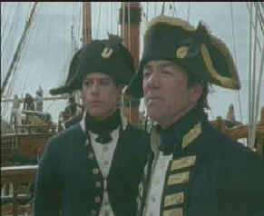

| Hornblower/B,C+ |
| A&E/1999/400m/FS
1.33 |
Action on the high seas does not define this incarnation of
Hornblower on film. The four episodes of the Hornblower
series are more a character study, a look at the
making of a man, though Hornblower's qualities are certainly
well established before boards Her
Majesty's Ship Justinian as a midshipman.
 |
| Hornblower
listens attentively to Captain Pellew. ©A & E |
It's a tall order for these tall
ships to consistently fill eight hours of programming on this
four DVD set. The first two episodes, The Duel and The Fire Ships
are the strongest. The Duel has several stirring moments, enough
to make the entire 100 minutes worthwhile. In addition to the
treat of meeting young Horatio, we get to watch him overcome his
first experiences on board ship as he develops in our
eyes and the eyes of his mates. Midshipman Simpson is a fine
villain, even if rather simplistically drawn, and Justinian's
Captain Keene is most unusual. The best of Hornblower
comes after he joins the frigate Indefatigable under the command
of Captain Sir Edward Pellew. Hornblower's relationship with
Pellew develops with intelligence and grows with each episode.
In The Fire Ships, Hornblower refines his heroic
qualities in the face of the enemy and learns there's more to a
man that what's on the surface. The midshipman builds respect
amongst the men and officers and rises to the rank of acting
Lieutenant.
Two of the episodes are even
primarily land based. The weakest of the four, The Duchess and
the Devil, feels as confined as the prison Hornblower shares
with his fellow officers in the third episode. There is too much
coy by-play between Hornblower and the Duchess of Wharfedale. On
the plus side, the Duchess is played by Cherie Lunghi, who I don't
recall seeing since him powerfully sensual performance in Excalibur. Midshipman Hunter is the other weak link in the
anchor chain of the "Duchess" episode. Hunter's
character is black or white and far from being believable.
The
final Hornblower episode, The Wrong War, takes place
mostly on French soil as Hornblower is assigned to accompany an
ill-fated invasion of France led by an exiled French
Marquis. Captain Pellew is left to await the fate of his
shipmates alongside the French coast, as the small French
invasion expedition marches on two fronts. Along with the battle
and brutality, amidst swift scenes of the guillotine,
Hornblower gets a taste of romance in France, but it's only like
a sip of wine from a grand bottle. There's little time spent
developing the romance and the pretty maid Hornblower falls for
is indeed beautiful, but she isn't given much material with
which to ply her art.
Ioan Gruffudd acquits himself quite
admirably as the young midshipman. Gruffudd combines the
qualities of confidence and diffidence that make Horatio
Hornblower more than a stick character. The Welsh actor is
sometimes a bit stiff, but Hornblower is supposed to be a stiff
character. The best performance is from Robert Lindsay as the
Indefatigable's Captain Pellew. A tart demeanor laced with
underlying humor is the hallmark of his Pellew.
Anthony Grieve's direction is workmanlike. This may be in part
due to a limited budget. Suffice it to say, the naval battles are
far from sweeping and almost every scene of the
"Indie" at sail seems stagnant. He's got great raw
material to work from. Hornblower is based on the novels
by Britisher C.S. Forester, who also penned the wonderful African
Queen.
The transfer
has far too many muddy scenes. This is partially artistic choice, yet I felt the transfer
could have looked richer. Contrast ratio seems pinched. Light
output is adequate and there few noticeable NTSC artifacts. Some
compositions seem cramped. Considering the British production
origins of Hornblower, it may well have been composed for
1.66. Happily, this is only a minor qualm. There are few blue
skies to be seen over the coarse of this four-disc DVD set. Most
problematic are the number of soft scenes. Was the
focus-puller or the colorist responsible? We will probably never
know. The sound is in good balance, with music never
overpowering dialog. Three cheers for the fine theme music that
accompanies Hornblower's exploits.
Fans of this Hornblower might enjoy another incarnation of the
midshipman as Captain Horatio Hornblower with reliable and stoic
Gregory Peck assaying Forrester's creation. Directed by Raoul
Walsh, this is more a colorful adventure in the Hollywood
tradition. Quite good of its kind. Unfortunately, this is still
a DVD MIA.
There
are some nice extras on the disc including a documentary about
the ships of the Royal Navy accompanying disc four. Other extras
include biographical notes on Hornblower author C.S. Forester on
disc one, nautical terms and definitions on disc two and a
making of short on disc three.. |
The
Feature
Archive has articles
ranging from A Western is
a Western is a Western to Screen
Voices, The
Heistmasters, Akira
Kurosawa, film preservationist Robert
Harris and Shawshank Redemption director Frank
Darabont.

Compressionist Jim Babinski tells it all about the art of
DVD MPEG Compression. Click the image to learn more.
Check out the Movie
Poster Archive
for short bios and images of Susan Hayward, Kirk Douglas,
Katharine Hepburn and many more. This month's featured star
is Clark
Gable.
Imaging
Science Foundation
The Imaging
Science Foundation promotes proper standards in home theater
viewing. ISF trained technicians offer monitor calibration
services to consumers. The difference in a properly
calibrated monitor can be astounding. Click on the image to find
an ISF member near you.
HOT
LINKS
DVD
Verdict
They
may be judgmental, but that's the point, isn't it. Lots of DVD
reviews plus news and more
The
Home Theater Forum
Looking for
lively and helpful exchanges on home theater, DVD, movies. Visit
this friendly site and get a hardy welcome.
Home Theater
Reference Reviewing System

When you read a DVD review it's of utmost importance to know
what equipment is being used to evaluate quality. Click on the
projectors to find out more.
|